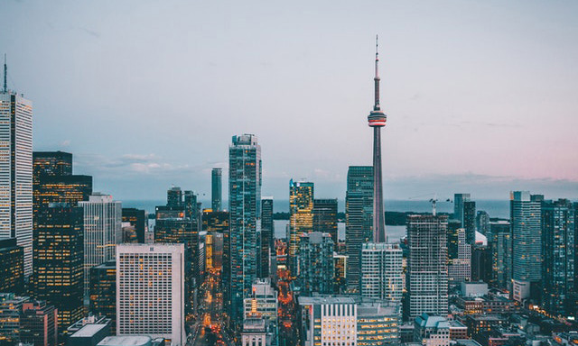

POCO摄影社区

- 1、进行城市景观的摄影就如同你拍摄其它传统风光摄影一样。你需要考虑到观众的眼睛是如何浏览眼前的场景，并且当前景、中景和背景都非常清晰时，眼睛浏览时才能看到最好的效果。
- 2、在城市中的风光摄影中，建筑物并非唯一，摄影师要想办法让广告牌、各种纹理、涂鸦、汽水罐、商店橱窗、汽车、雨伞等事物变得美丽。
- 2、人像摄影与一般的人物摄影不同：人像摄影以刻画与表现被摄者的具体相貌和神态为自身的首要创作任务
- 3、拍摄形式分为胸像、半身像、全身像。
- 4、一幅优秀的人像摄影作品，是许多成功因素的总和：神情、姿态、构图、照明、曝光、制作均要达到较高的境界，它们是一个总体的各组成部分。